Scorecard
Got your own mesh? Check your STL, OBJ or GLB free in your browser: watertight, non-manifold edges, parts and bed contact with the same definitions as rubric v0.2. Nothing is uploaded.
Matches prompt? is a disclosed human call (reviewed 2026-11-07 ET) against the locked FLUX reference — not part of the 100-pt printability rubric. Means below are printability-only. Across 24 human-reviewed rows (incl. Tripo H2.5): 13 yes · 9 partial · 2 no. Rows marked no (wrong object) are excluded from any “best / highest” claim. Flagship case: Hunyuan3D-2.1 T03 scored 96.7 but is a long hex prism, not a flat nut.
Rubric v0.2 · re-scored 2026-10-31 ET (first scored 2026-10-30)
Hunyuan3D-2: 1 of 6 score 100 on rubric v0.2 (5 of 6 on v0.1)
- 5/6 watertight single bodies; T05 still fails watertight (26.9/100, hard-fail). 6/6 sliced, now worth 5 points, not 20.
- v0.2 slices with real tree supports in the glTF Y-up pose: the fox needs 24.3% of its plastic as support, the planter 30%. The nut stands on its edge as delivered (38.8 mm² bed contact). Rubric change log.
- Space GLB exports include many index-degenerate zero-area padding triangles. The scorer drops those as export padding before watertight checks (not counted as holes).
- Raw output, no repair: locked prompts T01–T06 → FLUX.1-schnell reference (seed 1234) → Hunyuan3D-2 public Space (seed 1234, 30 steps).
- Also scored on the same prompts: Hunyuan3D-2.1 and Meshy 6 Lite (Meshy free plan; not flagship 7.1). HY2 vs 2.1 · Meshy vs HY2.1 · Meshy vs Tripo (printability head-to-head). Also scored: Tripo H2.5 (free export). Hitem3D, Rodin, MakeIt3D, Meshy 7.1 and TRELLIS are queued.
| Preview | Prompt | Generator | Score v0.2 | Matches prompt? | v0.1 | Watertight | Tree support | Bed contact mm² | Hull fill | Wall p5 mm | Est. time (n/a pts) |
|---|---|---|---|---|---|---|---|---|---|---|---|
 |
T01 · Coffee mug with handle | Hunyuan3D-2 | 98.2 | yes | 100 | yes | 8.9% | 317.8 | 19.2% | 1.283 | 1h 52m |
 |
T02 · Low-poly fox figurine | Hunyuan3D-2 | 86.9 | yes | 100 | yes | 24.3% | 21.6 | 35.6% | 2.199 | 1h 16m |
 |
T03 · M8 hex nut with threads | Hunyuan3D-2 | 89.8 | yes | 100 | yes | 23.3% | 38.8 | 61.8% | 4.813 | 1h 57m |
 |
T04 · Phone stand with slot | Hunyuan3D-2 | 100 | yes | 100 | yes | 3.5% | 612.3 | 31.7% | 1.823 | 1h 28m |
 |
T05 · 3-slot business card holder | Hunyuan3D-2 | 26.9 | partial | 39 | no | 53.8% | 49 | — | — | 1h 4m |
 |
T06 · Planter pot with drainage hole | Hunyuan3D-2 | 91.7 | yes | 100 | yes | 30% | 133 | 21.9% | 1.848 | 3h 43m |
Rubric v0.2 · scored 2026-10-31 ET · second generator
Hunyuan3D-2.1: 6 of 6 watertight. The “ground plate” was our input artifact, not the model
Dedicated compare pages: Hunyuan3D-2 vs Hunyuan3D-2.1 · Meshy 6 Lite vs Hunyuan3D-2.1 · Meshy vs Tripo (printability: Meshy ~77.9 vs Tripo H2.5 ~26.2).

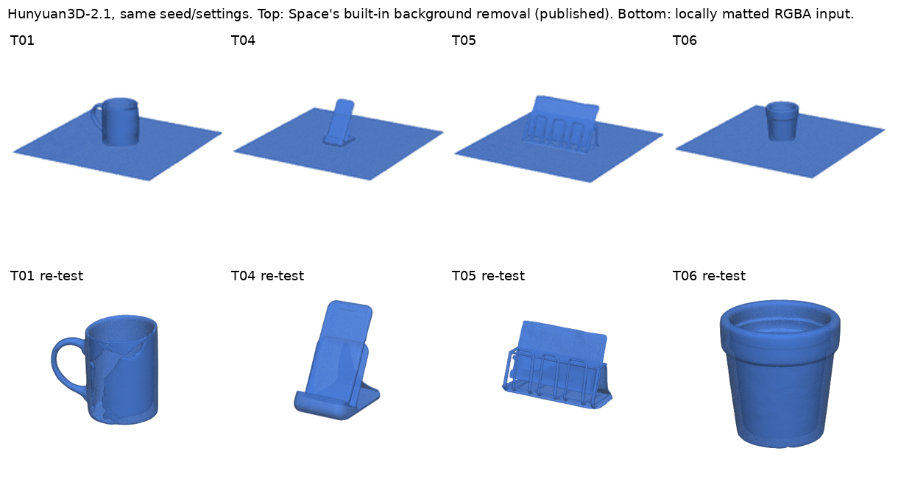
- Scores (original run): T01 81.7, T02 83.2, T03 96.7, T04 81.6, T05 73.8, T06 82.3. 6/6 watertight single bodies, 0 hard fails, 6/6 sliced.
- Correction 2026-10-31 (re-tested): the thin square plate under T01, T04, T05 and T06 came from our input, not from Hunyuan3D-2.1. Our reference images are off-white with soft shadows, and the Space’s built-in background removal left the image frame in. Re-run with the same seed and settings, but with the background removed locally first (rembg isnet-general-use, RGBA input, Space removal off): the plate is gone on all 4. Re-test scores: T01 86.6 (was 81.7), T04 98.2 (was 81.6), T05 72.2 (was 73.8), T06 95.6 (was 82.3); all 4 watertight single bodies, wall p5 0.52–2.71 mm. The table below still shows the original run (built-in removal) so every generator keeps the same protocol; a full re-run of all generators with matted inputs is planned. Re-test JSON, meshes, matted refs, retests.csv.
- T03 came out as a long hex prism lying on its side, not a flat nut; printability score 96.7 is high, but Matches prompt? = no (see column). Printability means stay geometric-only; wrong-shape rows are excluded from “best” claims.
- Raw output, no repair: same reference images → tencent/Hunyuan3D-2.1 public Space, shape model hunyuan3d-dit-v2-1 (seed 1234, 30 steps, guidance 5.0, octree 256), shape only.
- Hunyuan3D-2 and 2.1 are open-source Tencent models. Meshy 6 Lite (free plan) is the first cross-vendor comparison below. Flagship Meshy 7.1 is not scored (Pro download). Tripo H2.5 free export is scored below. Hitem3D, Rodin and TRELLIS are queued.

| Preview | Prompt | Generator | Score v0.2 | Matches prompt? | v0.1 | Watertight | Tree support | Bed contact mm² | Hull fill | Wall p5 mm | Est. time (n/a pts) |
|---|---|---|---|---|---|---|---|---|---|---|---|
 |
T01 · Coffee mug with handle | Hunyuan3D-2.1 | 81.7 | partial | — | yes | 5.1% | 2485.4 | 7.6% | 0.293 | 25m |
 |
T02 · Low-poly fox figurine | Hunyuan3D-2.1 | 83.2 | yes | — | yes | 29.3% | 13.4 | 34.3% | 1.942 | 50m |
 |
T03 · M8 hex nut with threads printable ≠ matches prompt |
Hunyuan3D-2.1 | 96.7 | no | — | yes | 9.9% | 67.8 | 89.5% | 2.437 | 50m |
 |
T04 · Phone stand with slot | Hunyuan3D-2.1 | 81.6 | partial | — | yes | 0% | 2488 | 7.4% | 0.289 | 23m |
 |
T05 · 3-slot business card holder | Hunyuan3D-2.1 | 73.8 | partial | — | yes | 26.6% | 2482.4 | 6.5% | 0.3 | 30m |
 |
T06 · Planter pot with drainage hole | Hunyuan3D-2.1 | 82.3 | partial | — | yes | 0% | 2482.5 | 8.4% | 0.29 | 23m |
Rubric v0.2 · scored 2026-10-31 ET · third generator · first cross-vendor
Meshy 6 Lite (free plan): 6 of 6 watertight, but T05 failed to slice
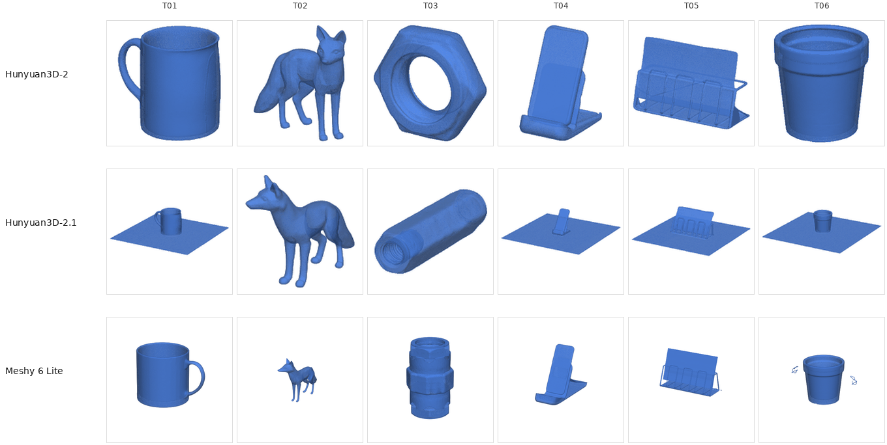
- Scores: T01 99.5, T02 80.5, T03 80.0, T04 81.2, T05 39.0, T06 86.9. 6/6 watertight, 5/6 sliced. T05 is watertight but OrcaSlicer returned exit 156 (hard-fail cap 39).
- Vs Hunyuan on the same prompts: T01 nearly matches Hunyuan3D-2 (99.5 vs 98.2). Printability-only mean ~77.9 trails Hunyuan3D-2 (~82.3) and Hunyuan3D-2.1 (~83.2); those means include wrong-shape rows (Meshy T03 and HY2.1 T03 = no). Higher tree-support share on T02–T04 and T06 (30–43%).
- Multi-body outputs: T01 has 2 bodies; T06 has 5. Fox (T02) has only 5.3 mm² bed contact. Nut (T03) wall p5 is 0.324 mm (under the 0.4 mm bar).
- Raw output, no repair: same reference PNGs → Meshy free account, image-to-3D, Meshy 6 Lite, untextured, 60 free credits ($0). This is not Meshy 7.1 (the default; free downloads of 7.x need Pro).
- Cross-vendor at last: open-source Tencent Hunyuan vs Meshy's free Lite model. Head-to-head: Meshy 6 Lite vs Hunyuan3D-2.1 · Meshy vs Tripo (Meshy ~77.9 vs Tripo H2.5 ~26.2). Flagship Meshy 7.1, Hitem3D, Rodin and TRELLIS are queued for scores.
| Preview | Prompt | Generator | Score v0.2 | Matches prompt? | v0.1 | Watertight | Tree support | Bed contact mm² | Hull fill | Wall p5 mm | Est. time (n/a pts) |
|---|---|---|---|---|---|---|---|---|---|---|---|
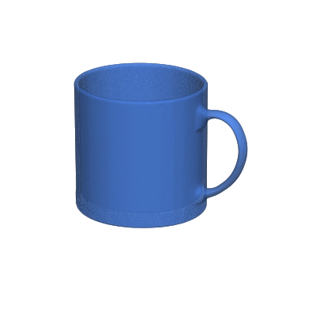 |
T01 · Coffee mug with handle | Meshy 6 Lite | 99.5 | yes | — | yes | 6.6% | 954.7 | 46.5% | 1.239 | 1h 59m |
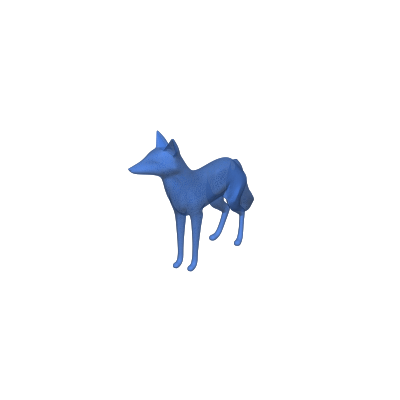 |
T02 · Low-poly fox figurine | Meshy 6 Lite | 80.5 | yes | — | yes | 33.4% | 5.3 | 28.6% | 1.077 | 42m |
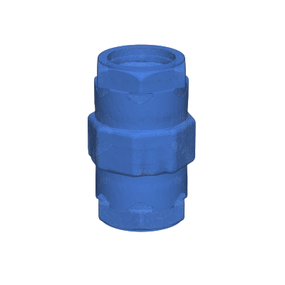 |
T03 · M8 hex nut with threads printable ≠ matches prompt |
Meshy 6 Lite | 80.0 | no | — | yes | 43.4% | 183.7 | 39.1% | 0.324 | 2h 59m |
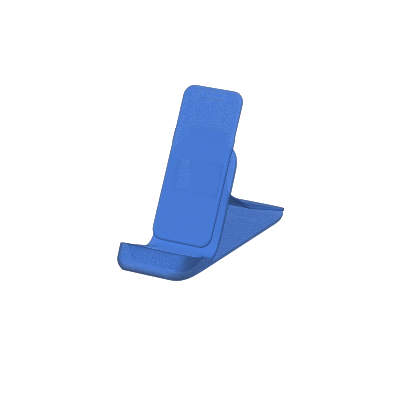 |
T04 · Phone stand with slot | Meshy 6 Lite | 81.2 | yes | — | yes | 32.9% | 685.7 | 14.8% | 0.463 | 51m |
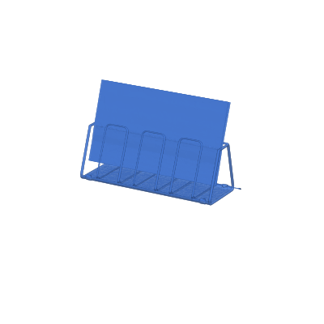 |
T05 · 3-slot business card holder | Meshy 6 Lite | 39.0 | partial | — | yes | — | 584.7 | 6.4% | 0.141 | — |
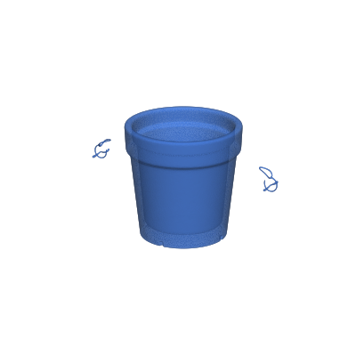 |
T06 · Planter pot with drainage hole | Meshy 6 Lite | 86.9 | partial | — | yes | 30.8% | 35.6 | 20.4% | 1.001 | 1h 9m |
Rubric v0.2 · scored 2026-11-07 ET · fourth generator · free-plan H2.5 only
Tripo H2.5 (free export): 0 of 6 watertight, all hard-fail (mean ~26.2)
- Scores: T01 29.3, T02 18.4, T03 23.2, T04 29.8, T05 25.0, T06 31.5. 0/6 watertight, 6/6 hard-fail, 6/6 still sliced. Printability-only mean ~26.2.
- Vs Meshy 6 Lite on the same prompts: Meshy mean ~77.9 (6/6 watertight) beats Tripo H2.5 free export by a wide margin. Head-to-head: Meshy vs Tripo.
- Non-manifold edges on every mesh (6–124). Wall p5 / hull fill not scored when not watertight. Multi-body: T03 has 2 bodies; T04 has 8.
- Raw output, no repair: same FLUX.1-schnell reference PNGs → Tripo free account, image-to-3D, H2.5–Legacy, texture off, free export ($0). This is not a newer paid Tripo model — free exports are H2.5 only (15/mo).
- Matches prompt? (disclosed human review 2026-11-07 ET, not in the 100-pt rubric): 4 yes, 2 partial (T03 nut ~2x M8 thickness; T05 pockets, not 3 vertical slots), 0 no.
| Preview | Prompt | Generator | Score v0.2 | Matches prompt? | v0.1 | Watertight | Tree support | Bed contact mm² | Hull fill | Wall p5 mm | Est. time (n/a pts) |
|---|---|---|---|---|---|---|---|---|---|---|---|
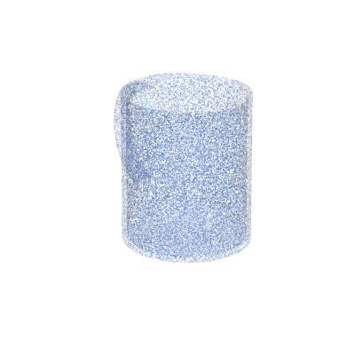 |
T01 · Coffee mug with handle | Tripo H2.5 | 29.3 | yes | — | no | 7.2% | 357.4 | — | — | 1h 36m |
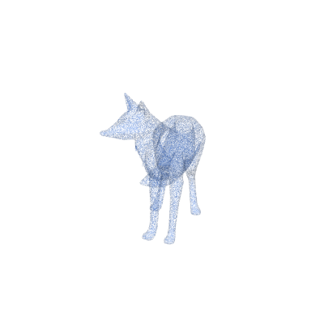 |
T02 · Low-poly fox figurine | Tripo H2.5 | 18.4 | yes | — | no | 31.3% | 16.4 | — | — | 1h 21m |
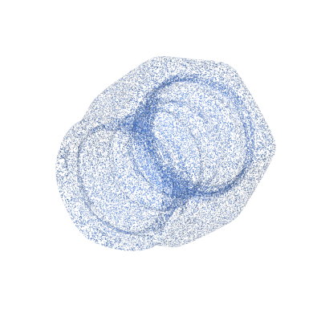 |
T03 · M8 hex nut with threads | Tripo H2.5 | 23.2 | partial | — | no | 21.1% | 22.9 | — | — | 4h 29m |
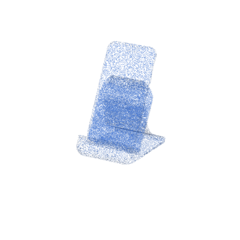 |
T04 · Phone stand with slot | Tripo H2.5 | 29.8 | yes | — | no | 20.5% | 901.5 | — | — | 1h 41m |
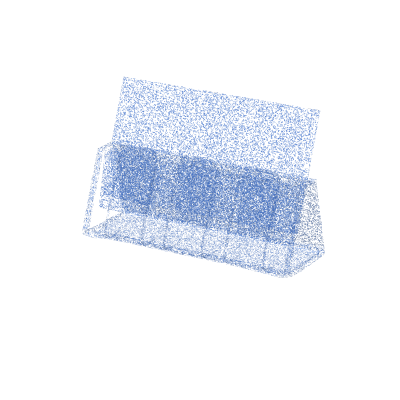 |
T05 · 3-slot business card holder | Tripo H2.5 | 25.0 | partial | — | no | 45.8% | 696.7 | — | — | 44m |
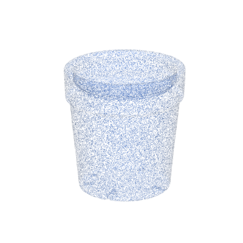 |
T06 · Planter pot with drainage hole | Tripo H2.5 | 31.5 | yes | — | no | 15.6% | 266.8 | — | — | 3h 58m |
Scorer validation (test meshes)
| Preview | Mesh | Type | Score v0.2 | v0.1 | Watertight | NM edges | Slice | Est. time |
|---|---|---|---|---|---|---|---|---|
 |
n01_closed_cube | control | 100 | 100 | yes | 0 | ok | 5h 21m |
 |
pd_capsule | control | 90.2 | 100 | yes | 0 | ok | 51m |
 |
pd_torus | control | 88.2 | 100 | yes | 0 | ok | 1h 17m |
 |
n05_thin_plate | thin wall | 90 | 90 | yes | 0 | ok | 12m |
 |
n04_intersecting_tets | self-intersect | 80 | 90 | yes* | 0 | ok | 1h 57m |
 |
n02_open_cube | broken | 35 | 39 | no | 4 | ok† | 5h 21m |
 |
n03_internal_wall | non-manifold | 30 | 39 | no | 5 | ok† | 5h 21m |
* Two watertight bodies that overlap — self-intersection penalty applied (v0.2 also: they touch the bed at a point, so 0 bed-contact points).
† Slicer can still emit G-code for some broken meshes; hard-fail cap still applies when not watertight.
‡ Watertight is measured after dropping index-degenerate export-padding faces common in Space GLB exports.
Also scored (not shown with thumbs): pd_cylinder 100, pd_icosphere 89.1 on v0.2 (both 100 on v0.1). Round controls lose bed-contact points in v0.2 because a sphere or torus has no flat base.
Matches prompt? (yes/partial/no): disclosed human review 2026-11-07 ET vs locked FLUX ref + published thumb; not in the 100-pt rubric. CSV: matches_prompt.csv / columns on scores.csv.
Hunyuan3D-2, Hunyuan3D-2.1, Meshy 6 Lite and Tripo H2.5 rows: meshes normalized to 50 mm longest edge, rotated from glTF Y-up to Z-up, auto-orient off; OrcaSlicer 2.4.2, Bambu Lab A1 0.4 mm, 0.20 mm Standard + tree(auto) supports at 45°, Generic PLA. Tree support = support extrusion ÷ all extrusion. v0.1 history: scores_v0.1.csv.
Queued: Meshy 7.1, Hitem3D, Rodin, MakeIt3D, TRELLIS
Meshy vs Tripo printability head-to-head is live (Meshy 6 Lite ~77.9 vs Tripo H2.5 free export ~26.2).
Next prompts T07 thin-sword + T08 mini (pack v0.2); not scored yet. Prompt pack bumped 2026-11-07 ET for thin-feature / minis VOC; T01–T06 scores above unchanged.
Meshy 6 Lite and Tripo H2.5 (free export) are scored above. Same locked prompts for the rest, same slicer profile, raw output before any repair. Get Friday scores by email, or follow with no account.
Confirmation email required (double opt-in). Free; unsubscribe anytime. Sent via Kit. Privacy.